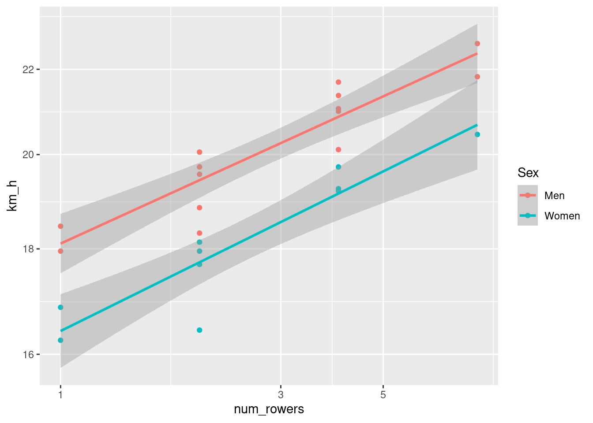

library(tidyverse)
library(lubridate)
week <- "Week_2"
raw_data <- read_csv(here::here(week, "Data", "rowing_records_2022.csv"))
clean_data <- raw_data |>
mutate(Boat = tolower(Boat)) |>
mutate(num_rowers = case_when( # recoding the boat as number of rowers
str_detect(Boat, "single") ~ 1,
str_detect(Boat, "pairs|double") ~ 2,
str_detect(Boat, "four|quad") ~ 4,
str_detect(Boat, "eight") ~ 8)) |>
mutate(time_min = as.numeric(seconds(Time)/3600)) |>
mutate(km_h = 2*60/time_min) # let's use the same units
# as the plot in the assignmentWeek 2 Homework
Rowing Records by Weight
Our goal is to verify if this relationship still holds:
\[V_{max} \propto N^{1/9} \]
Clean Data
Data is from a wikipedia entry: List of World Best Times in Rowing
Let’s import and clean the data
Visualize Relationships
Let’s see what rowers plotted against time looks like on a log-log plot.
clean_data |>
ggplot(aes(num_rowers, km_h, col = Sex)) + geom_point() + geom_smooth(method = "lm") + scale_x_log10() + scale_y_log10()
Model
Let’s fit a linear model on the log-log data:
models <- clean_data |>
group_nest(Sex) |>
mutate(coeffs = map(data, ~ lm(log10(km_h) ~ log10(num_rowers), .) |> broom::tidy())) |>
ungroup() |>
select(Sex, coeffs) |>
unnest(coeffs)Explore Model Results
models |>
select(Sex:estimate) |>
pivot_wider(names_from = "term", values_from = "estimate") |>
rename(c = 2, beta = 3) |>
mutate(c = 10^c) |> ## we need to exponentiate because the coefficient from the model is on the log scale
knitr::kable()| Sex | c | beta |
|---|---|---|
| Men | 18.10698 | 0.1021888 |
| Women | 16.42125 | 0.1108222 |
Interpretation
mod_clean <- models |>
select(Sex:estimate) |>
pivot_wider(names_from = "term", values_from = "estimate") |>
rename(c = 2, beta = 3) |>
mutate(c = 10^c)
coeff_sex <- mod_clean |>
pull(beta, Sex)This gives us beta coeff of 0.1021888 for men and 0.1108222 for women. This is fairly close to 1/9 (0.1111111).